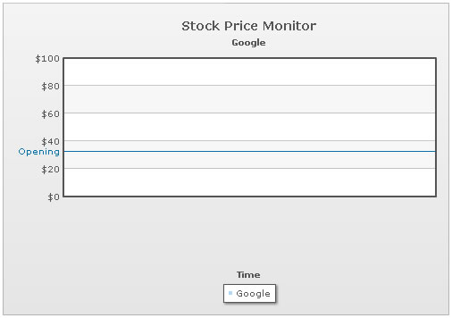
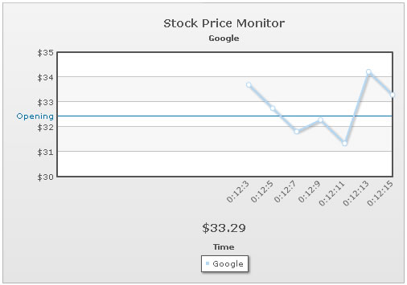
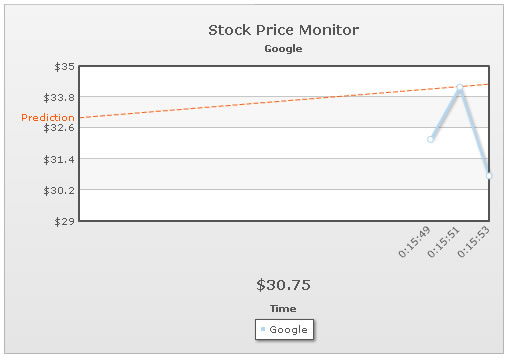
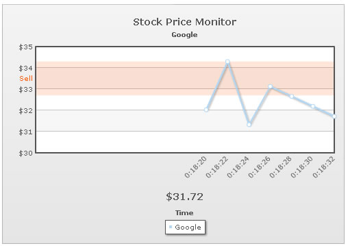

Data-streaming Charts > Adding trend-lines |
Trend lines are horizontal lines spanning the chart canvas which aid in interpretation of data with respect to some pre-determined value. For example, if you are monitoring a stock's price, you can add trend lines to show yesterday's closing price or support/resistance levels. You can add trend lines/zones to all the data streaming charts in FusionWidgets v3. For each trend line on the chart, you need to define a <line> element under <trendLines> element as under: |
| An example |
| Here, we're going to add a trend line to our previous Google Stock Monitor example, indicating previous day's closing value. To do so, you'll have to add the following in XML: |
| <chart caption='Stock Price Monitor' subCaption='Google' dataStreamURL='http://localhost/FusionChartsOld/RealTime/StockPrice.asp' refreshInterval='60' numberPrefix='$' setAdaptiveYMin='1' xAxisName='Time' showRealTimeValue='1' realTimeValuePadding='50' labelDisplay='Rotate' slantLabels='1'> <categories> </categories> <dataset seriesName='Google' showValues='0'> </dataset> <trendlines> <line startValue='32.45' displayValue='Opening' color='0372AB' /> </trendlines> <styles> <definition> <style type='font' name='captionFont' size='14' /> </definition> <application> <apply toObject='Caption' styles='captionFont' /> <apply toObject='Realtimevalue' styles='captionFont' /> </application> </styles> </chart> |
Here, we've added a trend line with value (specified as startValue) as 32.45 and given it a label of Opening. Also, we've specified its color. When you now run the chart, you'll see the trend line as under. Since the chart has no data initially, therefore the chart limits are 0-100. |
|  |
| However, when real time feeds come in and chart limits adjust to the same, the trend lines also automatically acquire new positions, as shown under: |
|  |
| During real-time update of the chart, if any trend line values fall out of chart axis limits, they do not show up on the chart. However, if the charts limits later adjust to accommodate the trend line values, they will then automatically re-appear. |
| Creating slanted trend lines |
The data-streaming charts also allow you to create slanted trend lines by setting: <line startValue='33' endValue='34.3' displayValue='Prediction' color='FF5904' dashed='1'/> As you can see here, we've specified both the startValue and endValue attributes for the trend line. The values specified for these attributes should be within the limits of chart axis. The above trend line would result in something as under: |
|  |
| Creating trend zones |
You can also create trend zones by setting: <line startValue='32.7' endValue='34.3' displayValue='Sell' isTrendZone='1' alpha='15' color='FF5904'/> For a trend zone, you need to specify both the startValue and endValue. Additionally, you need to set isTrendZone='1'. This will result in something as under: |
|  |